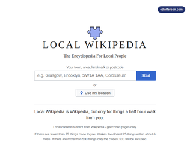
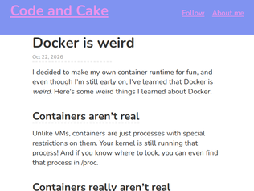
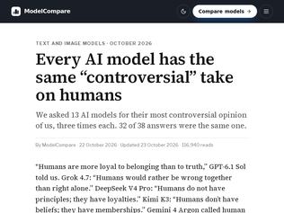
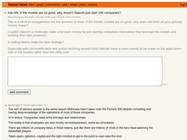
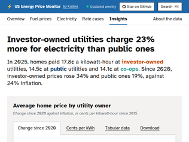

"The nearest Wikipedia entry to me is about a 3 hours 15 minute walk away, the nearest town. But there are so many interesting things closer, perhaps I should add them to the wiki. Twenty minutes to the north there's a pleasant shady area at the bottom of a canyon with a fallen log with a curve that fits my buttocks nicely. Fifteen minutes to the southeast there is a dead elk cow that has only been 3/4 eaten by the local coyotes, etc., and has a quite remarkable odor. To the northeast is the spot where I found a perfect arrowhead, the prize of my collection. But maybe it's better for me to horde these places to myself."
"Weird psychological quirk: otherwise banal articles seem much more pertinent when they happen to be nearby (I just read about a random plane crash from decades ago but felt very invested in it, due to proximity).Wonder if this is related to the biological phenomena of humans tending to care more about humans who resemble themselves than those who don't (homophily)"
"This is a great idea but I'd definitely make the distance configurable. Where I am right now would need several hours walking to reach anywhere Wikipedia worthy but if I expanded to say a 15km circle there's probably a couple of places of interest.Meanwhile if someone lives in a city they'll get loads of results.EDIT: actually this is just a wrapper around wikipedia's nearby feature I think. I tried a couple of places and they give identical results.https://en.wikipedia.org/wiki/Special:Nearby#/coord/15.90721..."
"I did some tests. I found it interesting that in the reasoning content the model identifies itself as Kimi by moonshot and sometimes it assumes ChatGPT as identity. Then sometimes it references the need to be approved by "the evaluator", other times it references global system guidelines / moonshot guidelines, and something about an phantom instruction line being "you are an assistant responding in an API" or something like that."
"Fascinating that we’re converging on AI safety and alignment in time across jurisdictions. The cybersecurity approach taken here is interesting because should the model be opened it’s still not dealignable because it just doesn’t know enough.The slow warming of the water is a good approach. I’ve been using abliteration.ai’s cybersecurity models to pentest my own software and it produces much more usable defensive results. Opus 5.5 can fix everything but the guardrails trigger too easily.The Fable ban affair was a nightmare for defensive cybersecurity. As far as I’m concerned we’re already in the world of Void Star and Cloudbreaker is here."
"There is a ton of questions to ask regarding their removal of cybersecurity data.First, how much “cybersecurity data” is just standard software knowledge that one can derive cyber security exploits from?Did they also get rid of all references to hacking in general?Are they implying that all the recent exploits are just things that were already in the data?For a model it doesn’t seem that far fetched to make the leap from “I have the knowledge of what hacking is” and “I know how computer systems work” to just being able to exploit stuff anyways."

"Hi, I'm the creator of Docker and came across this post. It's always fun to see other engineers think about how you designed a system. I haven't been involved in developing Docker in many years, but it's a fun trip down memory lane.I'm happy to answer any questions you may have."
"What made Docker unique IMO is not the container technology itself. I used chroot 20 years ago and it worked just fine. Yes, no network namespaces; no process namespaces, but I don't even think these are that important.What made Docker unique were there things:1. Dockerfile concept. Building images layer by layer. Caching layers. Everything in a single file. It made possible to iterate on image quickly. It made possible to implement CI builds efficiently.2. Docker network registry concept. Putting universal images onto a server and share them with the world.3. Momentum. A lot of software that was traditionally complicated to deploy, suddenly appeared in docker servers. I remember how fascinated I was, when I could deploy wordpress website with tiny docker-compose. And how contained it was. I could just delete every trace of it from my host. I always felt uneasy installing various things onto my host and docker just solved that uneasiness."
"I prefer Podman most of the time, but Docker is/was amazing and a great DX put on top of the so called "5 different linux kernel features in trenchcoat". That's the selling point, it's super lightweight and takes full advantage of the OS features that were already there (or being developed) but were awkward to use and required tons of specialized knowledge."
"Very cool demos, but now I'm interested to know: does enabling Lockdown mode help at all against these exploits? It'll theoretically protect against a lot of common attack vectors, but I'm curious about its real-life effectiveness."
"#3 is so nice, I want root access to my phone. Does anyone know if doing this can lock Apple out from updating/removing it?"
"What's with iOS and pdfs pwning them? Reminds me of the ForcedEntry in Pegasus.https://projectzero.google/2022/03/forcedentry-sandbox-escap...https://www.trendmicro.com/en_gb/research/21/i/analyzing-peg..."
"I can't believe no one I've seen has called out the secret game! Go to Settings>About and then hold the center button for 5 seconds. I used to play so much of this bricks game in college when procrastinating from studying in the library."
"Really is heartbreaking that the click wheel is such an incredible and satisfying user interface but technology has evolved such that we have no need for it anymore."
"I chuckle knowing that somewhere in Apple there is an SRE or engineer who is getting paged for elevated 404 rates, and has to silence the pages hoping that no real missing page issue crops up while we all hit this page. :)"

"I like the wallet example. Back in 2005, I found a wallet on the street with $3000 inside, and spent the rest of the day tracking down the owner. (Turned out it was a student's rent for her summer internship). Then maybe 2 months later I lost my wallet and a week later it showed up in my mailbox, cash and all -- someone took the time and their own money (as far as I could tell) to send it back to me.And just to prove that I'm an irrational human, for the last 21 years every time I pass the spot where I found the wallet I can't help but look around for a lost wallet, as if it's some magical spot where the universe deposits lost wallets."
"Brian: "Look, you've got it all wrong! You don't need to follow me! You don't need to follow anybody! You've got to think for yourselves! You're all individuals!"The Crowd: "Yes! We're all individuals!"Brian: "You're all different!"The Crowd: "Yes! We're all different!"A man in the crowd: "I'm not."The Crowd: "Shhh!""
"Virtually all posts I have seen recently boil down to "I asked the machine a question and I'm too lazy to think about the answer it gave me, so I posted it instead".Sure, there is some semantic value in the suggestions put forward, but none of them are ground-breaking or particularly profound, which is exactly what I would expect from an output that aims for median responses by design.I suspect this has something to do with the siloed nature of current learning practice, which generally doesn't encourage the cross-domain pollination of ideas."

"The sort of obvious answer is the same reason McKinsey hasn't taken over the Fortune 500 despite consulting and having deep knowledge of the operations of most of those companies.AI is brains. Companies need arms and legs and relationships.The reality is that employees are also mostly not entrepreneurs, same as consultants.There are trillions of company ideas in those tokens, just like there are trillions of shots in the fans head watching the basketball players.Takes years, patience, capital and the right mindset to get to the point to even take the shot."
"The question formed wrong . They killed entire industries. I feel like they are at inflection point where they hired fde , but for now they try to solve fancy problems to do not visually scare their customers .Yet picture is very sad , industries affected to the point that majority of the companies asking about their existence:1) software dev tools all IDE , developer analytics tools eg jellyfish etc . Dead . On the same note : warp.dev that raised $80m a year ago as an ai terminal… can barely explain why do they exist now.Visual workflow editors . Older ones and even n8n. There were literally 1000 companies that were doing small deployments. Why do you need it now ? A year ago half of the Internet was booming about these tools .Any data visualization tools . Gone .Data integration tools all kind of crm to crm to erp to something else . Solved problemAnd you can go on and on . I would probably not exaggerate if I’d say that millions of businesses are heavily affected by, from tiny one to adobe ."
"1. They are starting to do it. Take a look at OpenAI's product portfolio, there's a galaxy of attempts at application.2. Selling tokens via long running agents is the only thing that's provably working with respect to revenue growth.3. They need revenue yesterday. Increases in borrowing rates means access to capital isn't what it was in the 10s. Their runway is much shorter than you would imagine.4. Some of the decision makers at these companies believe AI will exhibit Jevons Paradox and that any decrease in price will result in induced demand.5. The frontier models are still subject to the limitations of AI. They're not good at everything. Better to have someone else learn that on their dime rather than yours."
"Finally, after eight hours and 357 points, 169 comments with healthy discussion - we have the inevitable flagging.I slightly know how this all works, and I still love HN. In any case, I hope everyone who flagged this [0] feels better now after squelching the discussion. It was already pushed far off the frontpage and it was only on /active. I guess that wasn't enough. The crazy thing is that I bet we would all get along over beers, vodka, or tea.[0] доброе утро"
"I saw this headline briefly when I came to HN, made a mental note to come back to it. A few minutes later, it's vanished. Not in the top 754 posts. Had to search for it. Such a shame, @dang!"
"http://archive.today/FHGAt"

"Alberta's electricity system is Canada's example of this. "de-regulation" meant the separation of generation, distribution and retail. Decades after this was supposed to lower the price of electricity, it's done the opposite. Big corporations are now guaranteed a profit at each layer of the system. There is no competition, because why would they compete if they're guaranteed a profit?So the result is Albertans pay more than most other Canadians for electricity. Even if the actual rate is low (which it isn't), the cost of electricity is usually only 10% of my bill. The rest is "transmission" "distribution" etc. It's insanely expensive compared to next door in British Columbia."
"This whole "but government is inefficient" argument has never convinced me. Our local electric provider has as bad or worse bureaucracy and ever-increasing rates. Bureaucracy is just a symptom of aging human systems, and it can be fixed. Monopolies that serve the public good should never been profit driven, full stop."
"Utilities should at minimum not have a profit motive involved, but the fact that we've been so happy to deliver vast profits to shareholders instead of proofing our grid has been a real tragedy."
"I found the website to be quite nauseating to look at, so I decided to use the GitHub link instead.But it's quite impressive that it works on QEMU, POCO X5 Pro 5G and some Xiaomi devices too.Website is here: https://hackios-web.vercel.app/enSource Code: https://github.com/oosexgang/hackios-xnu-kernel"
"This is going to be fun. There are already replica phones for the flagship phones that are running a shitty android version that has been customized to look like iOS. People need to tripple check now when buying older used iPhone models."
"There was a time that I would have liked iOS to run on other hardware. These days, it is so clunkly, that the the desire is not there."
Local Wikipedia: Wikipedia, but only for things a half hour walk from you
"The nearest Wikipedia entry to me is about a 3 hours 15 minute walk away, the nearest town. But there are so many interesting things closer, perhaps I should add them to the wiki. Twenty minutes to the north there's a pleasant shady area at the bottom of a canyon with a fallen log with a curve that fits my buttocks nicely. Fifteen minutes to the southeast there is a dead elk cow that has only been 3/4 eaten by the local coyotes, etc., and has a quite remarkable odor. To the northeast is the spot where I found a perfect arrowhead, the prize of my collection. But maybe it's better for me to horde these places to myself."
"Weird psychological quirk: otherwise banal articles seem much more pertinent when they happen to be nearby (I just read about a random plane crash from decades ago but felt very invested in it, due to proximity).Wonder if this is related to the biological phenomena of humans tending to care more about humans who resemble themselves than those who don't (homophily)"
"This is a great idea but I'd definitely make the distance configurable. Where I am right now would need several hours walking to reach anywhere Wikipedia worthy but if I expanded to say a 15km circle there's probably a couple of places of interest.Meanwhile if someone lives in a city they'll get loads of results.EDIT: actually this is just a wrapper around wikipedia's nearby feature I think. I tried a couple of places and they give identical results.https://en.wikipedia.org/wiki/Special:Nearby#/coord/15.90721..."